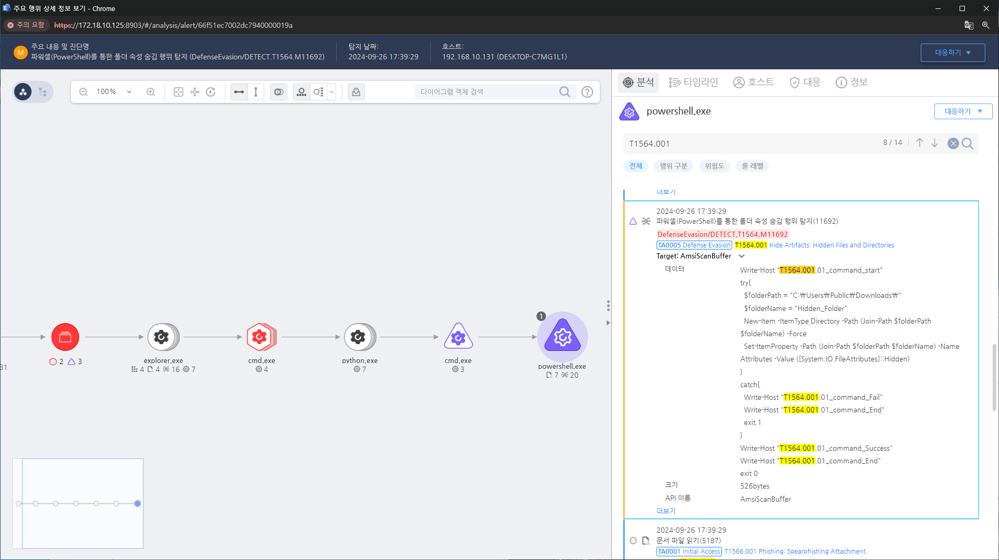

T1564.001.01 Create hidden folder - windows
D3FEND
MITRE ATT&CK 액션을 기준으로 대응 방안을 작성
Detection
Action : System-AmsiScan AND
amsiscanbuffer : "Set-ItemProperty" AND
amsiscanbuffer : "-Path" AND
amsiscanbuffer : "-Name Attributes" AND
amsiscanbuffer : "[System.IO.FileAttributes]::Hidden"
Detection(EDR)

Response
- 숨긴 폴더 검색: 파일 탐색기에서 숨긴 항목을 표시하도록 설정하고, 시스템 내의 숨겨진 폴더를 검색합니다.
- 시스템 로그 확인: 이벤트 뷰어를 통해 시스템 로그를 분석하여 숨긴 폴더 생성 시점에 어떤 작업이 있었는지 조사합니다.
- 보안 로그 분석: 사용자가 생성한 파일 및 폴더와 관련된 보안 로그를 분석하여 어떤 계정이 폴더를 생성했는지 확인합니다.
- 의심스러운 IP 차단: 로그를 통해 발견된 악성 활동과 관련된 IP 주소를 차단합니다.
- 의심스러운 폴더 격리: 숨긴 폴더가 악성으로 확인되면 즉시 해당 폴더를 격리하고, 추가적인 악성 파일이 있는지 검토합니다.
- 파일 삭제: 숨긴 폴더의 내용이 악성으로 판별되면, 해당 폴더를 삭제하거나 클린 상태의 백업에서 복원합니다.
Mitigations
타임스탬프 무결성 모니터링 (M1033 - Process Monitoring)
- 파일 시스템에서 타임스탬프 변경을 모니터링하고, 의심스러운 타임스탬프 변경이 발생했을 경우 알림을 발생하도록 설정
- 파일 및 디렉토리의 타임스탬프를 정기적으로 검사하여 변경된 내용을 기록하고, 비정상적인 타임스탬프 조작을 감지할 수 있도록 설정
- 파일 무결성 검사 도구를 사용하여 타임스탬프 변경을 포함한 파일 변경 사항을 추적하고, 이를 실시간으로 모니터링
파일 및 폴더의 무결성 검증 (M1055 - Secure Data Transmission)
- 파일 무결성을 확인하고, 타임스탬프를 포함한 변경 이력을 지속적으로 기록
- 디지털 서명 및 해시 값을 사용하여 파일의 원본 상태를 보장하고, 타임스탬프 변경 시 이를 탐지
- 보안 도구를 통해 파일의 타임스탬프 및 수정 기록을 자동화된 방식으로 검토하여 의심스러운 파일 활동을 신속히 식별
파일 시스템 로그 및 감사 시스템 강화 (M1031 - Network Segmentation)
- 파일 시스템의 로그 기록을 활성화하고, 타임스탬프 변경이 이루어진 파일에 대해 자동 감사 기능을 설정
- 시스템 로그에서 타임스탬프 변경을 추적하고, 자동화된 경고를 통해 의심스러운 활동을 탐지
- 침해 탐지 시스템(IDS) 및 침해 방지 시스템(IPS)을 통해 파일 시스템의 비정상적인 활동을 실시간으로 모니터링하고, 타임스탬프 조작 시도를 차단
디지털 포렌식 및 수사 도구 활용 (M1026 - Indicator Removal on Host)
- 디지털 포렌식 도구를 사용하여 타임스탬프 조작을 탐지하고, 파일 메타데이터를 상세히 분석하여 타임스탬프의 변경 여부를 확인
- 시스템 로그 및 파일 속성 분석을 통해 타임스탬프 조작 시도를 빠르게 감지하고, 이를 기록하여 조사할 수 있도록 설정
- 백업 및 아카이빙을 통해 변경되지 않은 파일 상태를 기록하고, 타임스탬프 변경 시 이를 비교하여 조작 여부를 확인
시스템 및 네트워크 활동 로그 기록 (M1019 - Application Layer Protocol)
- 모든 시스템 및 네트워크 활동을 상세히 기록하여 타임스탬프 변경이 발생했을 때 이를 추적할 수 있도록 설정
- 시스템 활동을 다양한 로그 파일에 기록하고, 타임스탬프 변경 및 파일 생성/수정/삭제 활동에 대한 알림 시스템을 설정
- 로그 기록의 중앙화를 통해 여러 시스템에서의 타임스탬프 변경을 일괄적으로 추적하고, 의심스러운 활동을 쉽게 식별
침해 사고 대응 및 대응 절차 (M1031 - Network Segmentation)
- 타임스탬프 변경이 의심되는 경우, 즉시 대응할 수 있는 절차를 마련하고, 침해 사고 대응 팀과 협력하여 변경 사항을 복구
- 타임스탬프 변경에 대한 대응 방안을 사전에 정의하고, 모의 훈련을 통해 신속한 대응을 가능하게 함
- 이상 징후 탐지 및 리포트 시스템을 통해 보안 팀이 타임스탬프 조작을 실시간으로 추적하고 대응할 수 있도록 시스템 구성
Affected Techniques
Action 실행시 함께 영향을 받는 다른 Techniqes
| D3FEND |
| D3-FCA File Creation Analysis |